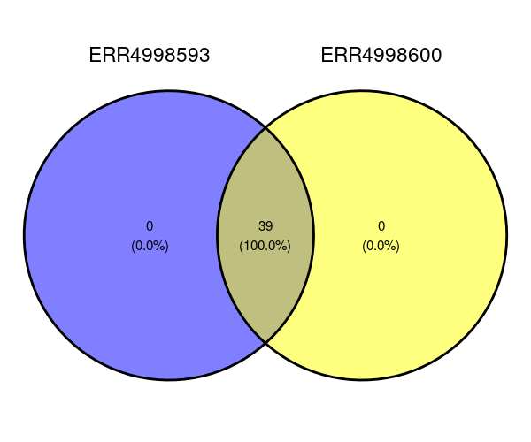
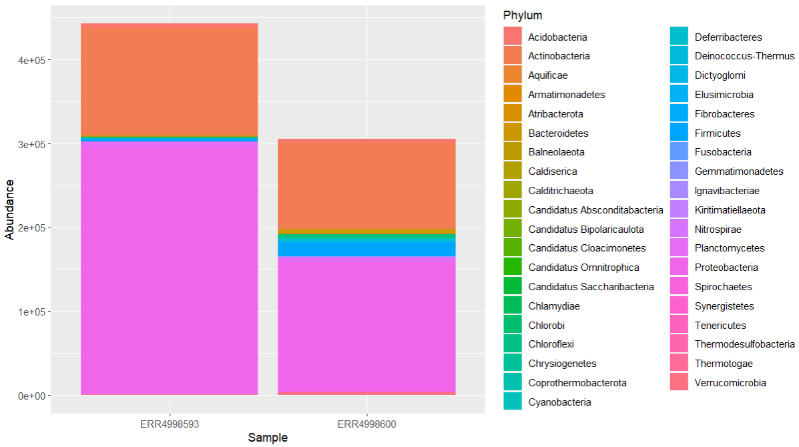
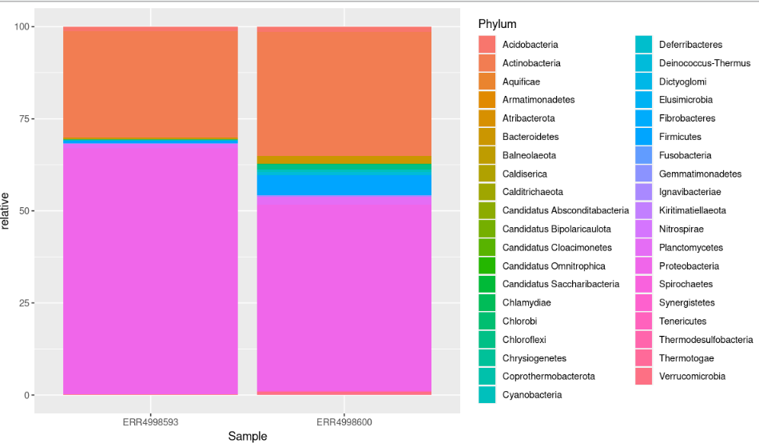
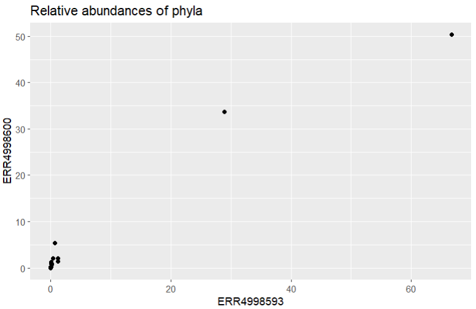
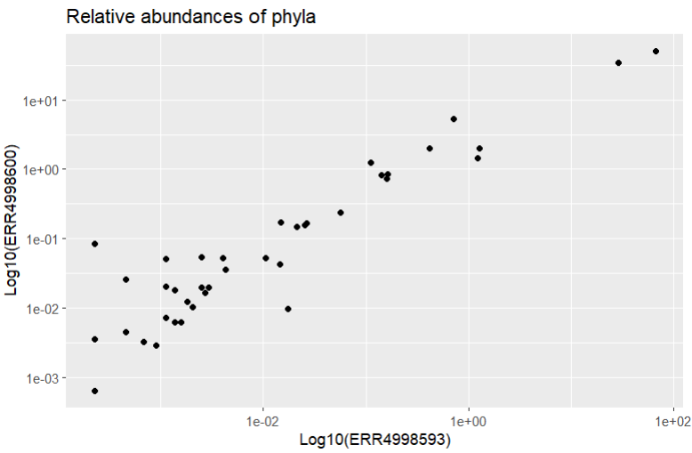
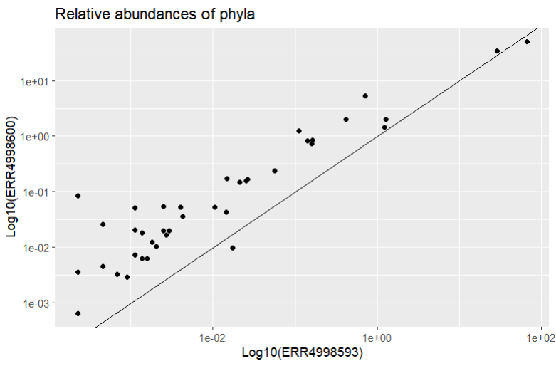
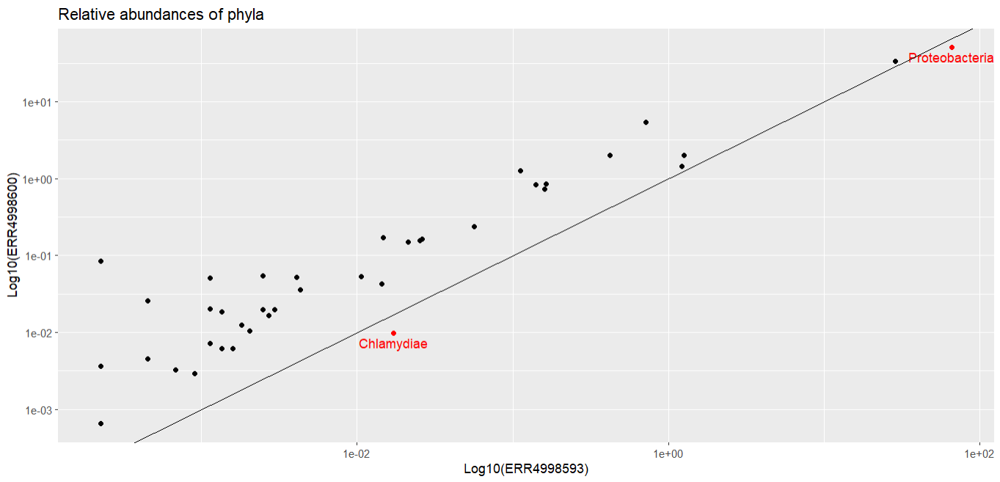

Taxonomic Analysis with R
Reminder
In the last lesson, we created our phyloseq object, which contains the information of our samples: ERR4998593 and ERR4998600. Let´s take a look again at the number of reads in our data.
For the whole metagenome:
Code (R)
biom_metagenome
sample_sums(biom_metagenome)Output
phyloseq-class experiment-level object
otu_table() OTU Table: [ 7637 taxa and 2 samples ]
tax_table() Taxonomy Table: [ 7637 taxa by 7 taxonomic ranks ]
ERR4998593 ERR4998600
444454 311439 Repeat this for the bacterial metagenome.
Use bac_biom_metagenome instead of biom_metagenome
Code (R)
bac_biom_metagenome
sample_sums(bac_biom_metagenome)Output
phyloseq-class experiment-level object
otu_table() OTU Table: [ 7231 taxa and 2 samples ]
tax_table() Taxonomy Table: [ 7231 taxa by 7 taxonomic ranks ]
ERR4998593 ERR4998600
442490 305135 We saw how to find out how many phyla we have and how many OTU there are in each phyla, by combining commands we:
- turned the tax_table into a data frame (a useful data structure in R)
- grouped by the Phylum column
- summarised by counting the number of rows for each phylum
- viewed the result This can be achieved with the following command:
Code (R)
bac_biom_metagenome@tax_table %>%
data.frame() %>%
group_by(Phylum) %>%
summarise(n = length(Phylum)) %>%
View()Summarise metagenomes
phyloseq has a useful function that turns a phyloseq object into a dataframe. Since the dataframe is a standard data format in R, this makes it easier for R users to apply methods they are familiar with.
Use psmelt() to make a dataframe for the bacterial metagenomes:
bac_meta_df <- psmelt(bac_biom_metagenome)Clicking on bac_meta_df on the Environment window will open a spreadsheet-like view of it.
Now we can more easily summarise our metagenomes by sample using standard syntax. The following filters out all the rows with zero abundance then counts the number of taxa in each phylum for each sample:
Code (R)
number_of_taxa <- bac_meta_df %>%
filter(Abundance > 0) %>%
group_by(Sample, Phylum) %>%
summarise(n = length(Abundance))Clicking on number_of_taxa on the Environment window will open a spreadsheet-like view of it
One way to visualise the phyla is with a Venn diagram. The package ggvenn will draw one for us. It needs a data structure called a list which will contain an item for each sample of the phyla in that sample. We can see the phyla in the ERR4998593 sample with:
Code (R)
unique(number_of_taxa$Phylum[number_of_taxa$Sample == "ERR4998593"])Output
[1] "Acidobacteria" "Actinobacteria" "Aquificae"
[4] "Armatimonadetes" "Atribacterota" "Bacteroidetes"
[7] "Balneolaeota" "Caldiserica" "Calditrichaeota"
[10] "Candidatus Absconditabacteria" "Candidatus Bipolaricaulota" "Candidatus Cloacimonetes"
[13] "Candidatus Omnitrophica" "Candidatus Saccharibacteria" "Chlamydiae"
[16] "Chlorobi" "Chloroflexi" "Chrysiogenetes"
[19] "Coprothermobacterota" "Cyanobacteria" "Deferribacteres"
[22] "Deinococcus-Thermus" "Dictyoglomi" "Elusimicrobia"
[25] "Fibrobacteres" "Firmicutes" "Fusobacteria"
[28] "Gemmatimonadetes" "Ignavibacteriae" "Kiritimatiellaeota"
[31] "Nitrospirae" "Planctomycetes" "Proteobacteria"
[34] "Spirochaetes" "Synergistetes" "Tenericutes"
[37] "Thermodesulfobacteria" "Thermotogae" "Verrucomicrobia"Repeat this for the ERR4998600 sample
Use ERR4998600 instead of ERR4998593
Code (R)
unique(number_of_taxa$Phylum[number_of_taxa$Sample == "ERR4998600"])"[1] "Acidobacteria" "Actinobacteria" "Aquificae"
[4] "Armatimonadetes" "Atribacterota" "Bacteroidetes"
[7] "Balneolaeota" "Caldiserica" "Calditrichaeota"
[10] "Candidatus Absconditabacteria" "Candidatus Bipolaricaulota" "Candidatus Cloacimonetes"
[13] "Candidatus Omnitrophica" "Candidatus Saccharibacteria" "Chlamydiae"
[16] "Chlorobi" "Chloroflexi" "Chrysiogenetes"
[19] "Coprothermobacterota" "Cyanobacteria" "Deferribacteres"
[22] "Deinococcus-Thermus" "Dictyoglomi" "Elusimicrobia"
[25] "Fibrobacteres" "Firmicutes" "Fusobacteria"
[28] "Gemmatimonadetes" "Ignavibacteriae" "Kiritimatiellaeota"
[31] "Nitrospirae" "Planctomycetes" "Proteobacteria"
[34] "Spirochaetes" "Synergistetes" "Tenericutes"
[37] "Thermodesulfobacteria" "Thermotogae" "Verrucomicrobia" To place the two sets of phlya in a list, we use
Code (R)
venn_data <- list(ERR4998593 = unique(number_of_taxa$Phylum[number_of_taxa$Sample == "ERR4998593"]),
ERR4998600 = unique(number_of_taxa$Phylum[number_of_taxa$Sample == "ERR4998600"]))And to draw the venn diagram
Code (R)
ggvenn(venn_data)The Venn diagram shows that all of the phyla are found in both samples. There are no phyla exclusive to either ERR4998593 or ERR4998600.
{kind=link}

Imagine that there were some phylas different between the two. Perhaps you would like to know which phyla are in ERR4998593 only? The following command would print that for us:
Code (R)
venn_data$ERR4998593[!venn_data$ERR4998593 %in% venn_data$ERR4998600]Output
NULLOf course, this time we get a NULL reponse since the statement doesn’t apply to any phyla.
Visualizing our data
We summarised our metagenomes by the number of phyla in each sample in number_of_taxa. We can use a similar approach to examine the abundance of each of these taxa:
Code (R)
abundance_of_taxa <- bac_meta_df %>%
filter(Abundance > 0) %>%
group_by(Sample, Phylum) %>%
summarise(Abundance = sum(Abundance))It would be nice to see the abundance by phyla as a figure. We can use the ggplot() function to visualise the breakdown by Phylum in each of our two bacterial metagenomes:
Code (R)
abundance_of_taxa %>%
ggplot(aes(x = Sample, y = Abundance, fill = Phylum)) +
geom_col(position = "stack"){kind=link}

We can see that the most abundant phyla in both samples are Proteobacteria and Actinobacteria.
Transformation of data
Since our metagenomes have different sizes, it is imperative to convert the number of assigned reads into percentages (i.e. relative abundances) to compare them.
We can achieve this with:
Code (R)
abundance_of_taxa <- abundance_of_taxa %>%
group_by(Sample) %>%
mutate(relative = Abundance/sum(Abundance) * 100)Then plot the result:
Code (R)
abundance_of_taxa %>%
ggplot(aes(x = Sample, y = relative, fill = Phylum)) +
geom_col(position = "stack"){kind=link}

This bar chart still isn’t ideal. It has too many colours to accurately identify each phyla.
Let’s try plotting the phyla as points on a scatter graph, with the two samples as axes.
First we select all the columns in abundance_of_taxa except Abundance, leaving Sample, Phylum and relative. Then we pivot the data frame so that each Sample has its own column, containing the values that used to be in the relative column. One row represents one phylum.
Code (R)
abundance_of_taxa_wide <- abundance_of_taxa %>%
select(-Abundance) %>%
pivot_wider(names_from = Sample, values_from = relative)Then plot a scatter graph with:
Code (R)
abundance_of_taxa_wide %>%
ggplot(aes(x = ERR4998593, y = ERR4998600)) +
geom_point() +
ggtitle("Relative abundances of phyla"){kind=link}

It looks like our data is all clustered at the low end of the scale, with only a couple of points further along. Let’s try using a log scale to see the spread a bit better. We’d better add labels to our axes too, to remind us that a log scale was used.
Code (R)
abundance_of_taxa_wide %>%
ggplot(aes(x = ERR4998593, y = ERR4998600)) +
geom_point() +
scale_x_log10() +
xlab("Log10(ERR4998593)") +
scale_y_log10() +
ylab("Log10(ERR4998600)") +
ggtitle("Relative abundances of phyla"){kind=link}

That’s better! We should also add a reference line too so we can see where the points would be if they were found in equal proportions in both samples. Then we can see which phyla have a higher relative abundance in each sample. We can do this with geom_abline() which draws a line with formula y = x.
Code (R)
abundance_of_taxa_wide %>%
ggplot(aes(x = ERR4998593, y = ERR4998600)) +
geom_point() +
scale_x_log10() +
xlab("Log10(ERR4998593)") +
scale_y_log10() +
ylab("Log10(ERR4998600)") +
geom_abline() +
ggtitle("Relative abundances of phyla"){kind=link}

Most of the points fall closer to the ERR4998600 axis, telling us most of the phyla recorded had higher relative abundance in this sample than in ERR4998593. ERR4998593 is probably dominated by one or two extremely abundant phyla - we actually already know this from looking at the relative abundances as a bar chart.
Let’s finish by marking the phyla that are more abundant in ERR4998593 in a different colour and labelling them. We start by calculating the difference between the relative abundances for each sample - this will tell us if each phylum is more abundant in ERR4998600 (a positive number) or in ERR4998593 (a negative number). Then we make a list of all the phyla which have a negative difference.
Code (R)
abundance_of_taxa_wide <- abundance_of_taxa_wide %>%
mutate(diff = ERR4998600 - ERR4998593) %>%
arrange(diff)
ERR4998593_phyla <- filter(abundance_of_taxa_wide, diff < 0)$PhylumNow we have a list of phyla we can plot new points on the graph that are only present in the list we just made, this time in a different colour. We can also add a label with geom_text() to tell us what phyla these points represent.
Code (R)
abundance_of_taxa_wide %>%
ggplot(aes(x = ERR4998593, y = ERR4998600)) +
geom_point() +
geom_point(
data = filter(abundance_of_taxa_wide, Phylum %in% ERR4998593_phyla),
aes(),
col = "red") +
geom_text(
data = filter(abundance_of_taxa_wide, Phylum %in% ERR4998593_phyla),
aes(label = Phylum),
nudge_y = -0.125,
col = "red") +
scale_x_log10() +
xlab("Log10(ERR4998593)") +
scale_y_log10() +
ylab("Log10(ERR4998600)") +
geom_abline() +
ggtitle("Relative abundances of phyla"){kind=link}

The two phyla which are more abundant in ERR4998593 than in ERR4998600 are Proteobacteria and Chlamydiae. We’ve seen Proteobacteria before, in our bar chart, where it was the most abundant phylum in both samples. We could probably have guessed from that graph that Proteobacteria had a higher relative abundance in one sample than the other, because the bars were very large. But we probably wouldn’t have been able to tell which sample Chlamydiae was more abundant in - its relative proportion in both is too small to see in the bar chart.